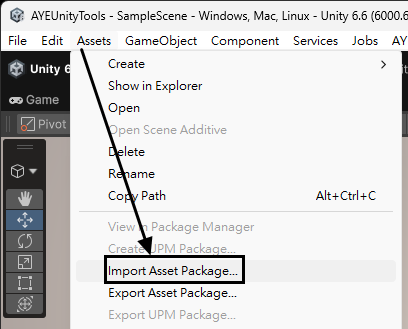
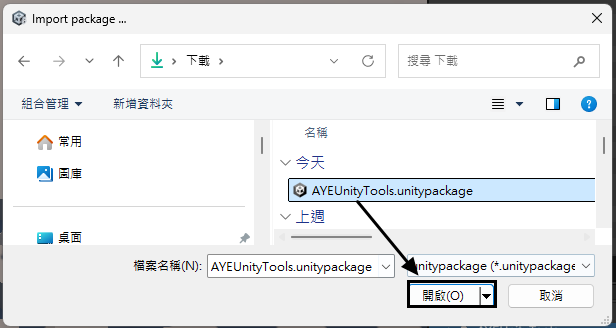

阿葉Unity工具包
⬇ 下載 AYEUnityTools.unitypackage
安裝步驟
下載上方的
.unitypackage
檔，然後在 Unity 選單點選
Assets → Import Package… → Import Asset Package…
（匯入資源包）。

在視窗中找到剛下載的
AYEUnityTools.unitypackage
，點選「開啟」，再於 Unity 跳出的視窗按
Import
即完成。
